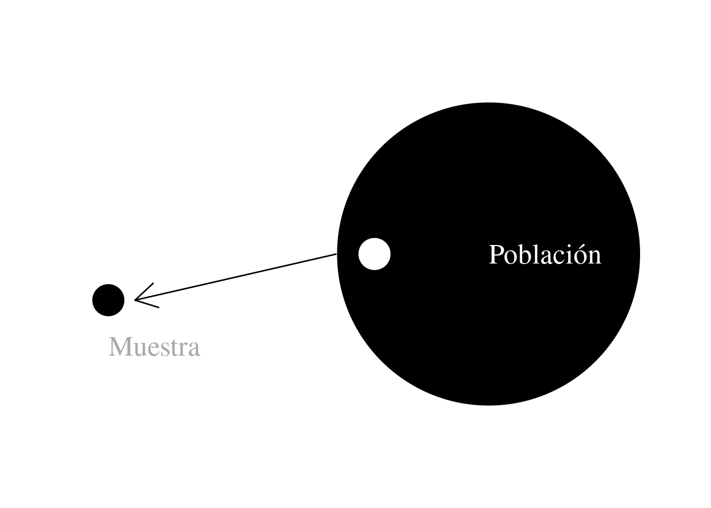

source("_common.R")1 Conceptos fundamentales
En este capítulo introducimos algunos conceptos fundamentales del análisis cuantitativo y de las estadísticas. Consideramos los conceptos de población y muestra. Hacemos una brevísima introducción a la teoría de la probabilidad. Diferenciamos entre los algunos usos importantes de la estadística: descriptiva e inferencial. Finalmente consideramos algunas maneras de clasificar variables.
1.1 Poblaciones y muestras
En su uso diaro usamos población para designar un grupo de personas, por ejemplo la población del Gran Buenos Aires; o por lo menos de seres vivos como por ejemplo la población de ratas de la CABA. En estadísticas, en cambio, se usa el término de manera más general para significar cualquier recolección de un conjunto, elementos, artículos o sujetos que gozan de características comunes con el fin de estudiarlos y de esta forma se sacar conclusiones específicas para determinar sus resultados. Así podemos hablar de la población de sustantivos en las obras de Jorge Luis Borges o de la población de notas asignadas en los cursos a nivel universitario.
Podemos distinguir entre poblaciones finintas e infinitas. La población de motocicletas vendidas en Buenos Aires en septiembre es finita. En cambio la población de temperaturas medidas en el Campus de San Martín es infinita, ya que, por lo menos teóricamente, podemos seguir midiendo para siempre.
Cuando una población fininta no es demasiado grande podemos investigar la totalidad de la población. Pero, si la población es muy grande o potencialmente infinita tenemos que estar contentos con muestras extraídas de esta población. Por ejemplo: si queremos saber quién va a ganar las próximas elecciones podríamos preguntar a todo aquel que tiene derecho a votar cómo piensa votar para sacar el resultado. En la práctica esta metodología resultaría demasiado costosa, por lo que hacemos una muestra representativa de votantes, les preguntamos y generalizamos.
Resulta evidente que hay que tener cuidado al selecionar una muestra para análisis. Los métodos estadísticos, los que nos permiten generalizar e inferir, suponen que las muestras están tomadas de manera aleatoria o al azar. Esto no significa que la muestra sea arbitraria, sino que cualquier unidad de la población que estamos estudiando tiene la misma probabilidad de ser selecionada para hacer parte de la muestra.

1.1.1 Muestra aleatoria
Para tener una muestra verdaderamente aleatoria de una población deberíamos asignar un número u otro identificador único a cada una de las unidaded de la población –a cada persona si se trata de una población humana– escribir cada número en un papel y echarlos en una tómbola. Luego de virarla por algún tiempo y mesclar bien los papeles, podríamos de allí sacar la cantidad de papeles que corresponda al tamaño de nuestra muestra. Obviamente esto no resulta muy práctico por lo que se suele empezar con una secuencia de números aleatorios del tamaño de la muestra y extraer unidades de la población basado en ello. Por ejemplo, si quisieramos sacar veinte libros al hazar de un estante de la biblioteca que contiene doscientos libros, necesitamos veinte números aleatorios entre uno y doscientos, y sacamos los libros que desde algún punto de referencia (primer libro del primer nivel) está a esa distancia.
Ahora, ¿dónde encontramos números aleatorios? Hay secuencias en libros de estadísticas, usados principalmente antes de la existencia de computadoras. También se pueden generar esas secuencias en linea. Finalmente, R tienen un generador de números aleatorios que nos permite generar los de números de nuestra muestra con un solo comando usando la función de R sample.
Ejemplo en R: Generar muestra
sample(x = 1:200, size = 20)
## [1] 166 46 42 179 188 143 126 135 102 93 72 193 13 107 198 100 88 67 33 99Acá le estamos pidiendo a R que nos de una muestra aleatoria (sample ) de números entre uno y doscientos (x = 1:200), y que la muestra sea de veinte size = 20 ). Con estos números podemos ir al estante y sacar los libros que queremos estudiar.
Si corren este comando desde su consola de R los números deben salir diferentes, se hace una muestra aleatoria cada vez.
Ejemplo en R: Ordenar los datos
También es posible ordenar los números, lo cual nos ahorra un poco de tiempo al retirar los libros. Se logra con la función sort.
sort(
sample(x = 1:200, size = 20, replace = TRUE)
)
## [1] 29 35 38 41 54 74 75 79 85 92 103 112 114 120 127 153 173 185 187 1881.1.2 Muestra cuasialeatoria
Otra estrategia que podría emplearse para sacar veinte libros al azar del estante que describimos en la sección anterior sería decidir que vamos a sacar cada diez libros ya que \({200\over20} = 10\). Este tipo de muestra lleva el epíteto cuasialeatoria, y funciona bien si el orden original de la población es aleatorio. Sin embargo, hay que tener en cuenta que esta estrategia puede generar una muestra no representativa si existe una estructura en ese orden. Típicamente puede resultar problemática si existe periodicidad en la población que estamos analizando. Si, por ejemplo, queremos tener una muestra de cuantos ómnibus pasan delante de mi casa por día sería mala idea decir que vamos a contarlos cada siete días. Si el día que empezamos es un domingo obtendremos seguramente una muestra con cantidades inferiores a la población real (en este caso definida como todos los ómnibus que pasan por mi casa en un día); y si empezamos a contar un lunes las cantidades serían superiores.
1.1.2.1 Ejemplo en R: Generar una sequencia
Si bien sacar la secuencia para sacar cada diez libros resulta trivial, existe la manera que hacerlo también con una función de R.
seq( from = 10, to = 200 , by=10 )
## [1] 10 20 30 40 50 60 70 80 90 100 110 120 130 140 150 160 170 180 190 200La función seq (de secuencia), toma tres parámetros, desde dónde empezamos (from=10), hasta dónde queremos llegar (to=200), y con qué distancia (by=10).
Por lo pronto se vuelve más útil si estamos trabajando con números menos redondos. Digamos que queremos sacar cada siete libros de un estante que contiene cien empezando por el número seis.
seq( from = 6, to = 100 , by = 7 )
## [1] 6 13 20 27 34 41 48 55 62 69 76 83 90 971.1.3 Muestra estratificada
Cuando conocemos algunos parámetros de la población que queremos estudiar también nos podemos asegurar que nuestra muestra tenga parámetros similares. Esta estrategia puede resultar particularmente útil si suponemos que este parámetro puede tener alguna influencia en otra variable cuya distribución queremos conocer. Si por ejemplo suponemos que el sexo puede influir en la opinión de una persona sobre la ley del aborto podemos asegurarnos de que nuestra muestra tiene una distribución similar a la de la población en general. Se sabe que hay más o menos mitad y mitad1 en la población general por lo que convendría que nuestra muestra tenga la misma distribución. Así podemos sacar, para una muestra de veinte, diez hombres y diez mujeres al azar2. Lo mismo se puede aplicar a otras variables, por ejemplo, clase social, país de origen etcétera.
1.2 Representatividad
Es importante entender que ninguna de las estrategias descritas en la sección anterior nos garantiza que la muestra que sacamos sea representativa de la población, con lo cual no está garantizado que una generalización basada en esa muestra sea válida. Lo que sí se puede calcular es la probabilidad de que la muestra sea representativa. Es decir, podemos tener una estimación de en qué medida la muestra representa la población.
Para profundizar un poco este concepto vamos a hacer un breve desvío y desarrollar un poco de teoría de la probabilidad por medio de un ejemplo sumamente sencillo. Digamos que queremos hacer una muestra aleatoria de la población en Argentina. Vamos a seleccionar al azar a tan solo tres personas para nuestra muestra. Ya que sabemos que hay la misma cantidad de hombres y mujeres la probabilidad de que el/la primero/a que elijamos sea hombre es 0,53, lo cual también es la probabilidad de que sea mujer. Ahora, cuando seleccionamos el/la segundo/a y tercero/a las probabilidad son las mismas en todos los casos. Las leyes de probabilidad indican que la probabilidad de que dos o más eventos independientes sucedan es el producto de sus probabilidades individuales. Entonces, cuál es la probabilidad de que los tres miembros de la muestra sean mujeres?
\[0,5\times0,5\times0,5=0,125\] Resulta evidente que lo mismo sucede si queremos calcular la probabilidad de que todos sean hombres.
Ahora, bien ¿cuál sería la probabilidad de que sean dos mujeres y un hombre?
Hay tres maneras que esto pueda suceder:
| Primero/a | Segundo/a | Tercero/a |
|---|---|---|
| Masculino | Femenino | Femenino |
| Femenino | Masculino | Femenino |
| Femenino | Femenino | Masculino |
Cada una de estas posibilidades tienen la misma probabilidad y como el orden en el que fueron elegidos no es relevante para la muestra, podemos sumar las probabilidades para obtener la probabilidad total: \[(0,5\times0,5\times0,5)+(0,5\times0,5\times0,5)+(0,5\times0,5\times0,5) = 0,375 \]
Lógicamente lo mismo ocurre con el caso de dos hombres y una mujer. Entonces tenemos cuatro posibilidades con distintas probabilidades:
| Muestra | Probabilidad |
|---|---|
| Tres mujeres | 0,125 |
| Dos mujeres + un hombre | 0,375 |
| Dos hombres + una mujer | 0,375 |
| Tres hombres | 0,125 |
Observamos que las probabilidades suman 1, lo cual es matemáticamente inevitable.
Está claro que una muestra de tan solo tres personas nunca puede ser representativa de la población, sin embargo vemos que la medida en que son poco representativas varía. Cualquiera de las muestras de 2+1 sería más representativa que las de un solo sexo, y vemos que también son probables.
Este ejemplo es extensible a muestras más grandes con cálculos similares. Se desarrollará en más detalle en capítulos posteriores, pero para tener un ejemplo un tanto más real imaginemos que hemos decidido realizar una muestra de diez personas de la misma población (que tiene un 50 y 50 de hombres y mujeres).
| Hombres | Mujeres | Probabilidad |
|---|---|---|
| 0 | 10 | 0,001 |
| 1 | 9 | 0,010 |
| 2 | 8 | 0,044 |
| 3 | 7 | 0,117 |
| 4 | 6 | 0,205 |
| 5 | 5 | 0,246 |
| 6 | 4 | 0,205 |
| 7 | 3 | 0,117 |
| 8 | 2 | 0,044 |
| 9 | 1 | 0,010 |
| 10 | 0 | 0,001 |
Obtendríamos los resultados de la tabla @ref(tab:probabilidades-combinaciones-posibles-diez) y observamos que hay aproximadamente un 0,9 de probabilidad (90%) de obtener una muestra no peor que 7-3. También no es de sorprenderse que mientras más grande sea la muestra más probable es que sea representativa4.
1.3 Estadísticas descriptivas e inferenciales
Entre los varios usos de las estadísticas este texto tratará de dos de los más importantes. Uno es el descriptivo que consiste en describir cuantitativamente un conjunto de datos y eventualmente generalizar este análisis a una población. Otro es el de inferir propiedades y diferencias entre variables.
Vamos a desarrollar estas distinciones por medio de un ejemplo5. Supongamos que hemos hecho dos muestras aleatorias de las notas del examen final de dos cursos de la materia Métodos cuantitativos, uno dictado exclusivamente como curso teórico y el otro como curso teórico-práctico.
Las notas son: Curso A (teórico-práctico):
15, 12, 11, 18, 15, 15,9, 19, 14, 13, 11, 12, 18, 15, 16, 14, 16,17, 15, 17, 13, 14, 13, 15, 17, 19, 17, 18, 16 y 14.
Y para el Curso B (teórico):
11, 16, 14, 18,6,8,9, 14, 12, 12, 10, 15, 12,9, 13, 16, 17, 12,8,7, 15,5, 14, 13, 13, 12, 11, 13, 11 y 7
El examen fue identico para ambos grupos y se podía obtener un máximo de veinte.
Antes de sacar conclusiones sobre estos datos deberíamos resumirlos. Podemos construir, por ejemplo, una tabla que muestra la frecuencia de cada nota en cada curso. Esto se llama tabla de frecuencias. También nos gustaría saber cuál es la nota más típica, la nota promedio y cuánto varían las notas respecto a éste. Estas son estadísticas descriptivas, y los desarrollaremos en los capítulos dos y tres de este texto.
Pero seguramente también quisiéramos saber con qué nivel de confianza podemos generalizar estos datos a similares grupos de datos usando métodos similares a los mencionados. Nos gustaría saber en qué medida las dos muestras que tenemos son representativas de sus respectivas poblaciones de estudiantes tomando cursos similares. Este tipo de estimaciones se verá en detalle en el capítulo cinco.
Además quisiéramos saber si podemos afirmar que alguno de los dos grupos estuvo mejor que el otro en el examen final. Podríamos postular, por ejemplo, que el grupo que recibió el curso teórico-práctico debería sacar mejores notas en promedio que el otro. Para ello hay que construir un test de la hipótesis y someter nuestros datos a este test.
Tanto la tarea de estimación como el test de hipótesis comprenden la inferencia de relaciones a partir de medidas descriptivas y juntos constituyen el área de estadísticas inferenciales.
Finalmente, podríamos juntar más datos para determinar si existe en cualquiera de los dos cursos algún sub-grupo cuyas características se relacionan con un resultado específico. Con esta información estaríamos en condiciones de predecir las notas de los estudiantes en futuras cursadas de los cursos en cuestión.
1.4 Variables y su clasificación
En estadísticas trabajamos esencialmente con cantidades variables. En estadística definimos variable como: Una característica medida u observada al hacer un experimento u observación. Si, por ejemplo, estamos investigando el clima en Buenos Aires, podemos hacer medidas de temperatura, humedad, dirección e intensidad del viento etcétera.
Las variables pueden ser clasificadas de diferentes maneras:
Por su relación con otras variables
En la mayoría de investigaciones cuantitativas variamos una o más conjuntos de condiciones y medimos los efectos sobre una o más propiedades que son de nuestro interés. Las condiciones que cambiamos nosotros se denominan variables independientes6 y los cuya respuesta a las condiciones cambiantes medimos se llaman variables dependientes.
Por su nivel de medición
Cuando hacemos una medición o observación o «recogemos un dato» debemos fijarnos en su nivel de medición, también llamado escala de medición. Distinguimos cuatro niveles o escalas:
Nivel nominal
Cuando un dato identifica una etiqueta (o el nombre de un atributo) de un elemento, se considera que la escala de medición es una escala nominal. En esta carecen de sentido el orden de las etiquetas, así como la comparación y las operaciones aritméticas. La única finalidad de este tipo de datos es clasificar a las observaciones. Ejemplo:
Una variable que indica si el visitante de este post es «hombre» o «mujer».
En esta variable se tienen dos etiquetas para clasificar a los visitantes. El orden carece de sentido, así como la comparación u operaciones aritméticas.
Nivel ordinal
Cuando los datos muestran las propiedades de los datos nominales, pero además tiene sentido el orden (o jerarquía) de estos, se dice que se mide en escala ordinal. Ejemplo:
Una variable que mide la calidad del café en la cafetería de la universidad. Le podemos asignar de uno a cinco estrellas.
En esta variable sigue sin tener sentido las operaciones aritméticas, pero ahora sí tiene sentido el orden. Cuatro estrellas es mejor que dos.
Nivel de intervalo
En una escala de intervalo, los datos tienen las propiedades de los datos ordinales, pero a su vez la separación entre las variables tiene sentido. Este tipo de datos siempre es numérico, y el valor cero no indica la ausencia de la propiedad. Por ejemplo: La temperatura (en grados centígrados) medida de una ciudad, puede ser cero sin que tenga sentido decir que «no hay temperatura».
En este nivel de medición, los número mayores corresponden a temperaturas mayores. Es decir, el orden importa, pero a la vez la diferencias entre las temperaturas importa. La diferencia entre 10 grados y veinte grados es igual que la diferencia entre 20 y 30. El nivel de medida de intervalo también se conoce como el nivel intervalar.
Nivel de razón
En una escala de razón –también llamado de ratio o racional, los datos tienen todas las propiedades de los datos de intervalo, y la proporción entre ellos tiene sentido. Para esto se requiere que el valor cero de la escala indique la ausencia de la propiedad a medir. Ejemplos de este tipo de variables son el peso de una persona a el tiempo utilizado para una tarea y el salario de una persona. Si una persona gana 100, y otra 10, la primera gana más que la segunda (comparación). También tiene sentido decir que la primera gana 90 más que la segunda (diferencia), o que gana 10 veces más (proporción).
Por su precisión
Cuando hablamos de precisión en matemáticas y estadísticas nos referimos al numero de decimales que tiene una variable. Esto es distinto de exactitud que significaría la medida en que la medición, o predicción corresponde a la realidad. 1,000 (uno coma cero cero cero), tiene más precisión que 1 (uno) si bien miden la misma cantidad. Esto lleva a la distinción que hacemos entre variables discretas y continuas. Las discretas por su naturaleza tienen precisión cero (no lleva decimales) y las continuas pueden tener la cantidad de decimales que queramos. Para ilustrar la diferencia consideramos dos variables: edad y numero de hijos. En cuanto a la edad se puede tener diez años, diez años y medio o si queremos agregar más precisión: 20,45 años. En cambio numero de hijos es una variable discreta. Se puede tener cero, uno o más, pero no se puede tener 1,45 hijo.
Por su naturaleza vemos que las variables de escala nominal y ordinal son siempre discretas. Las de escala de intervalo y de escala de razón, en cambio pueden ser tanto discretas como continuas.
La mayoría de variables de interés en las ciencias duras se miden por escala de razón o de intervalo, mientras las escalas ordinal y nominal son más importantes en ciencias humanas. El nivel de medición de una variable es de suma importancia cuando decidimos qué medidas de tendencia central, variabilidad y dispersión elegimos para nuestro análisis, y qué test de hipótesis son adecuados. Es un error muy común entre investigadores, particularmente en las ciencias sociales, asumir una escala superior a lo teóricamente sostenible.
1.5 Glosario
Butler, Christopher. 1985. Statistics in linguistics. Basil Blackwell.
En realidad 51 y 49%↩︎
En este ejemplo hemos usado sexo como la variable biológica es decir ausencia o presencia de un cronozoma Y. Si queremos en cambio usar género obviamente también podemos incluir más categorías que las clásicas masculino y femenino si lo consideramos conveniente.↩︎
En estadísticas las probabilidades suelen expresarse por decimales, es decir: 0,5; en lugar de porcentajes: 50%↩︎
Si se lleva este argumento al extremo: si el tamaño de la muestra fuera igual al tamaño de la población, la muestra sería perfectamente representativa.↩︎
También se conocen como predictores o variables experimentales↩︎